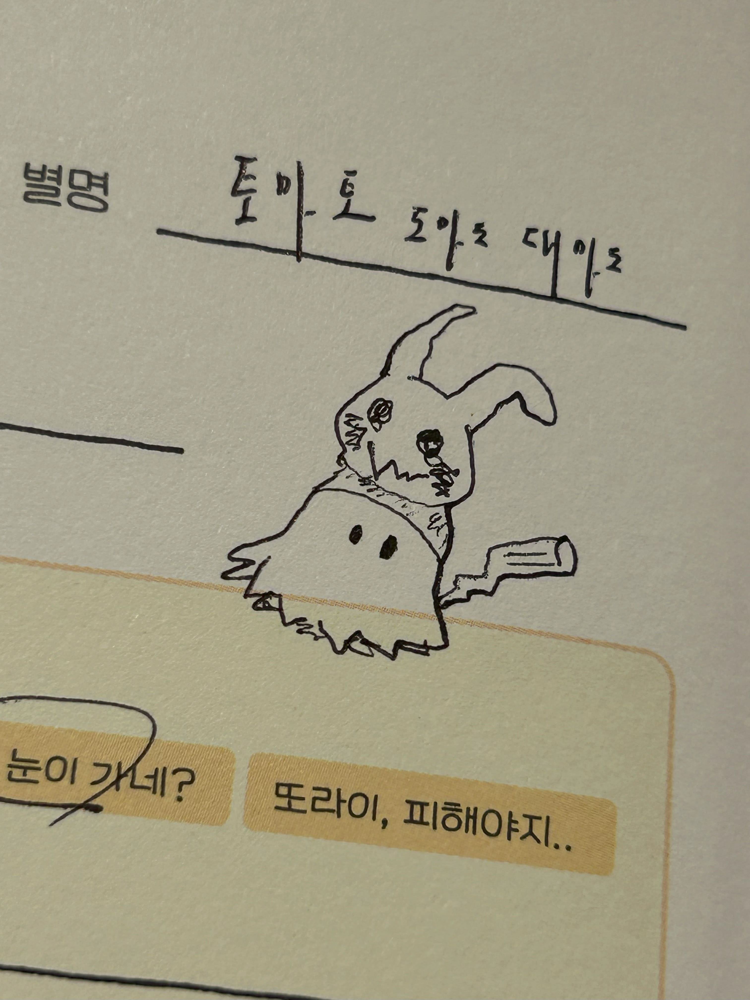
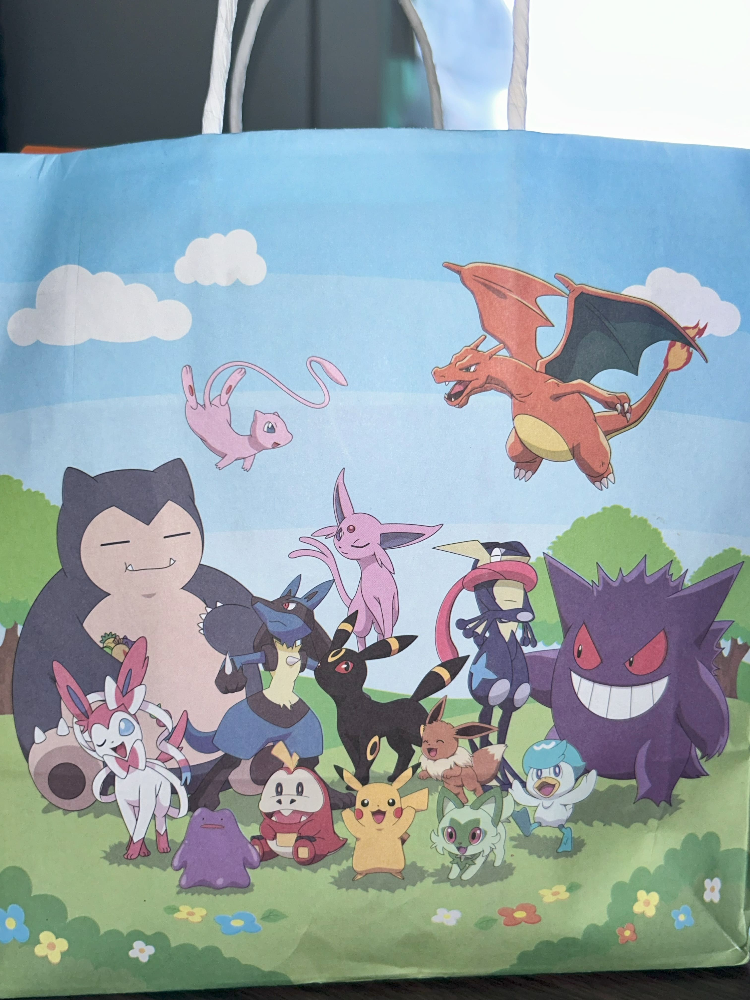
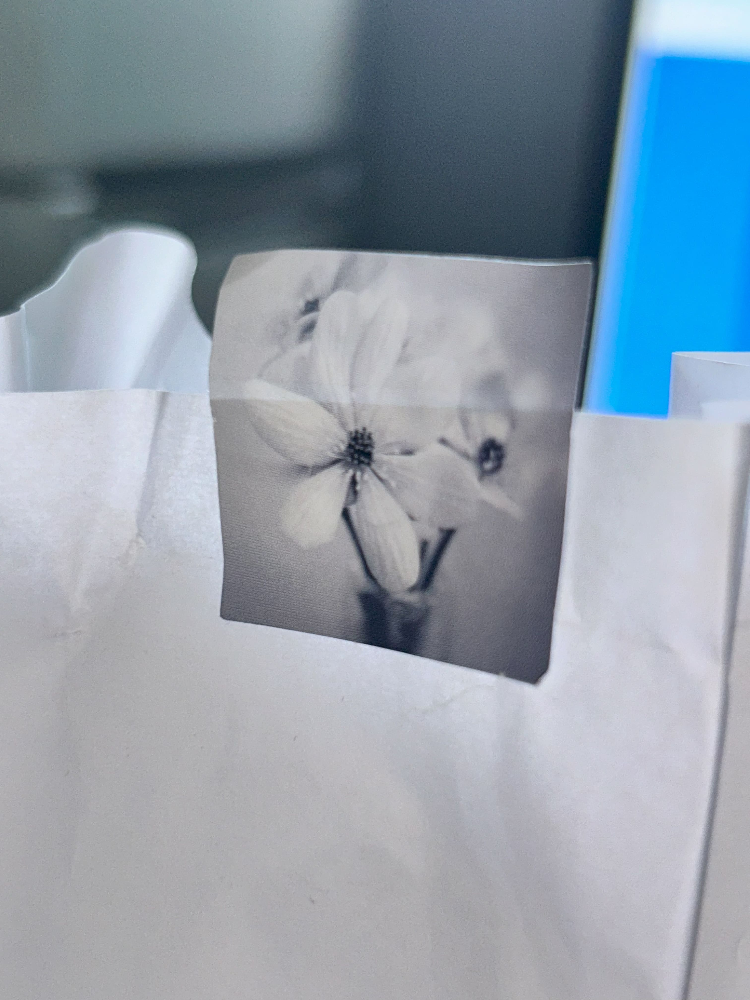
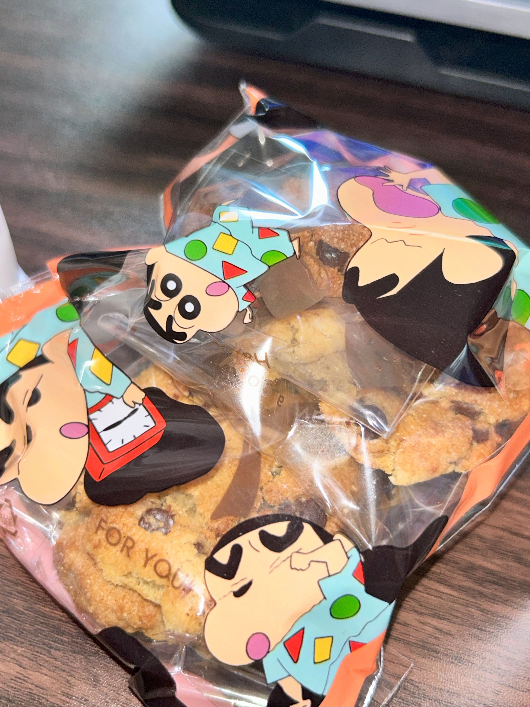
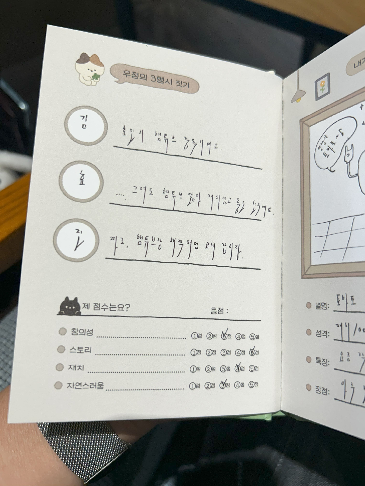
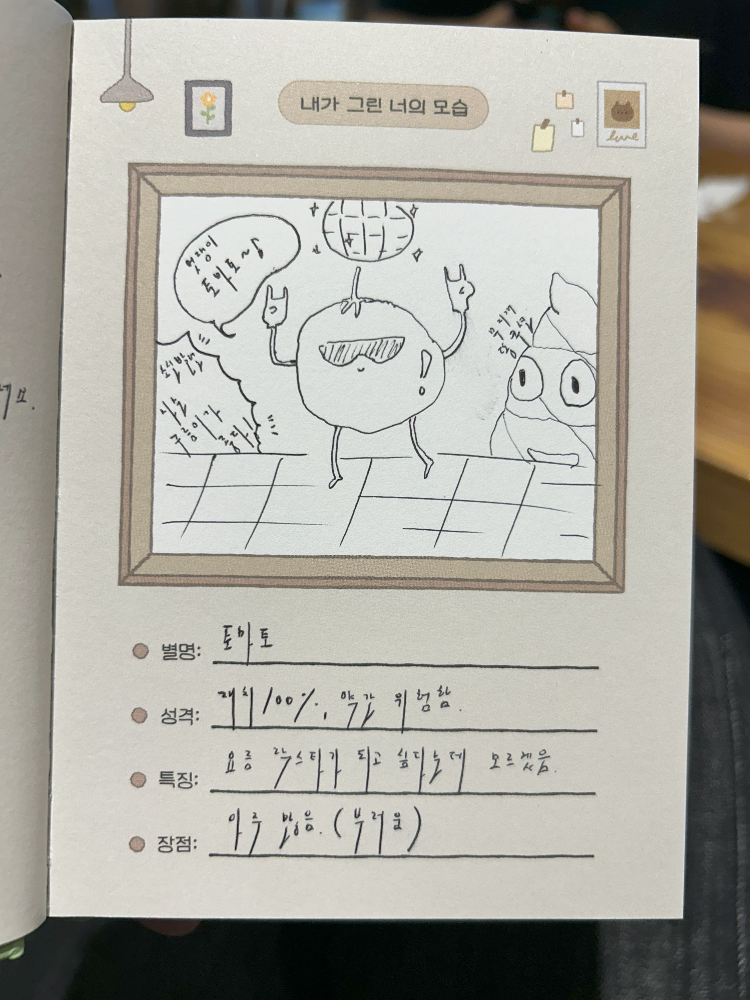
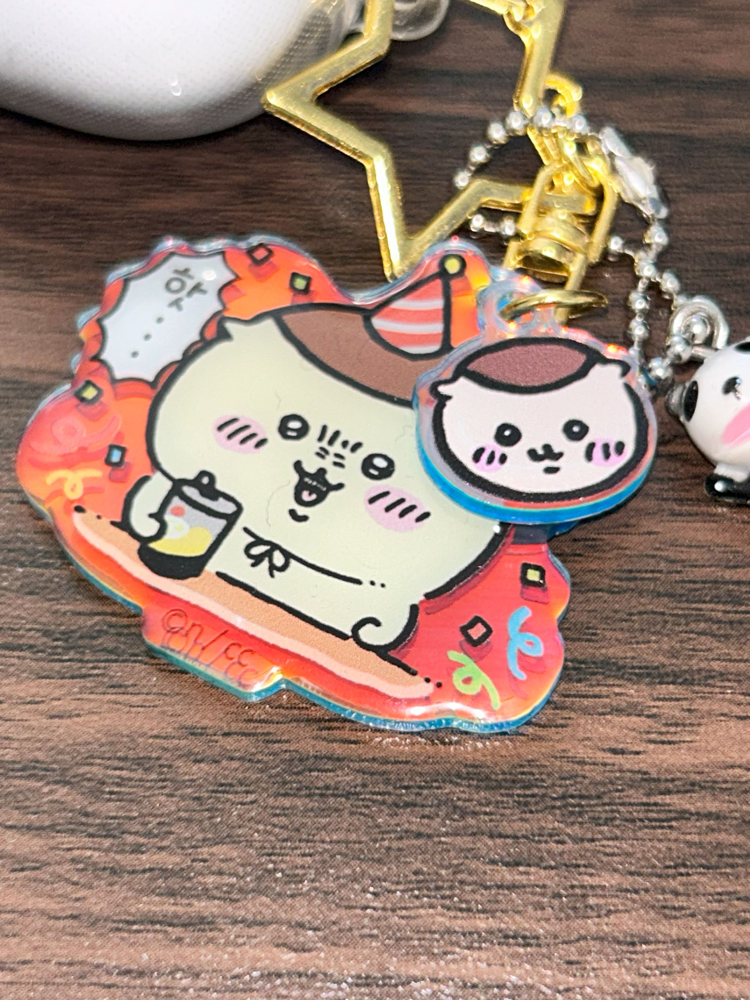

지금부터 우리 열차 출발합니다!
먼저 수빈 씨와 함께한 식사!

제가 좋아하는 식당인데요
이곳은 돈카츠 전문 일식집이랍니다
근데 알밥이 맛있는, 내가 돈카츠를 안 좋아한다는 이슈로.
저는 카레를 먹고 수빈시는 알밥을 드셧어요 ^p^
근데 이제 나만 맥주를 마시는,
괜찮아요?!
네, 괜찮아요.

본 일기는 따라큐가 함께합니다.
안녕하세요?
그동안... 많은 문의를 주셨는데요
"일기 써라"
나갈 일이 없었습니다.
쓸 일도 없었습니다.
이상입니다.
이대로 끝내면 아쉽겠죵?!
지금부터 우리 열차 출발합니다!
먼저 수빈 씨와 함께한 식사!
제가 좋아하는 식당인데요
이곳은 돈카츠 전문 일식집이랍니다
근데 알밥이 맛있는, 내가 돈카츠를 안 좋아한다는 이슈로.
저는 카레를 먹고 수빈시는 알밥을 드셧어요 ^p^
근데 이제 나만 맥주를 마시는,
괜찮아요?!
네, 괜찮아요.


숩빈시애 후원... 옴매 ; 촛토 카와이노 뿌끼몬데스wwww
우 짬 조으까잉... ;; ㅠ 감동으 눈물을 왈칵 쏟앗잔슴~ ;
왜? 바로 이것을 보고.

컬러를 맞춘겨~~
워메 우짠디야 나는 감당 몬혀

쿠키도 구워다 줬는디 꽃마감이여!!!

포장지는 짱구야!!!!!!!!!!
감동해서 우정노트를 꺼내 부렀으...
삼행시를 맡겼는디

스토리에 백만 점!
실력은... 우정으로 십만 점!
ok lego!
그가 그려 준 나의 초상화...

얼씨구? ㅋㅋ 잘 그리네? 감다살
아직 안 죽은 그림 실력에 감탄햇습니다
점수는... '제가 이걸 평가해도 될까요?'입니다!
맛다 ㅎ 저희 깡도 햇어요
저는 뜻을 처음 알앗는데...
먼가 작고 귀여운 녀석들이라고 해서 먼작귀라고 하더군요?
처음알앗어요저는...
그런 김에...!

핫...!
님들 신기한 거 보여 줄까요
사람이 이래도 되나 싶은 거 보여 줄까요
이게 인간인가 싶은 거 보여 줄까요
ㄹㅇ 신기